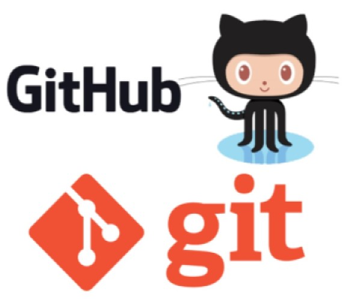

Hyperblog |Tu blog master
Hyperblog |Tu blog master
Este es el título atractivo e interesante del post
Este es el párrafo de inicio donde vamos a explicar las cosas increíbles que se pueden hacer con ramas.
En este blog también se veran cosas nueva de gran interés relacionados con git y github que se van aprendiendo en el curso.

Además que compartiré avance de las clases, el manejo de branches y otros
Suscribete y dale like